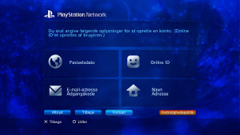

PlayStation™Network > Oprettelse af konto
Oprettelse af konto
Brug af denne funktion kræver muligvis en opdatering af din System Software.
PSNSM er en onlinetjeneste til onlineshopping, der kan bruges via  (PlayStation®Store), ved at deltage i chat under
(PlayStation®Store), ved at deltage i chat under  (Venner) eller bruge forskellige onlinetjenester fra PSNSM. Brug af PSNSM kræver en Sony Entertainment Network-konto. Hvis du vil oprette en konto, skal du vælge
(Venner) eller bruge forskellige onlinetjenester fra PSNSM. Brug af PSNSM kræver en Sony Entertainment Network-konto. Hvis du vil oprette en konto, skal du vælge  (Opret en konto) under
(Opret en konto) under  (PlayStation™Network) og derefter følge vejledningen på skærmen.
(PlayStation™Network) og derefter følge vejledningen på skærmen.

Vigtigste nødvendige ting til oprettelse af en konto
| Personlige oplysninger | Indtast oplysningerne for den registrerede bruger, herunder fødselsdag, -måned og -år samt brugerens navn og adresse. |
|---|---|
| Hovedkonto / Underkonto | Der findes to typer konti: hovedkonti og underkonti. Hovedkontoholdere kan angive visse brugsvilkår for tilknyttede underkonti. Hovedkonto: En registreret bruger af en bestemt alder eller ældre kan oprette en standardkonto. Hovedkontoholdere kan angive visse brugsvilkår for tilknyttede underkonti. Underkonto: Brugere, der ikke lever op til kravene for at oprette en hovedkonto i deres region, kan kun bruge en underkonto. Underkontoholdere kan ikke oprette en tegnebog, men kan bruge den tegnebog, der er tilknyttet hovedkontoen til at betale for produkter og serviceydelser. Der kan kun oprettes en underkonto, hvis der er tilknyttet en eksisterende hovedkonto. Kravene til oprettelse af hovedkonti og underkonti varierer, afhængigt af land eller region. Du kan finde flere detaljer på SIE websitet for dit land/område.. |
| Log ind-ID (e-mail-adresse) | Registrer et ID, du vil bruge ved login på PSNSM. Brug en gyldig e-mailadresse, som kan bruges til at modtage bekræftelsesbeskeder på i tilfælde af, at du for eksempel foretager et køb under (PlayStation®Store). |
| Adgangskode |
Vælg en adgangskode i overensstemmelse med følgende:
|
| Online ID |
Registrer et navn, der bliver vist offentligt i PSNSM. Du kan ikke ændre dit online-ID, når det først er oprettet. Opret dit online-ID i henhold til det følgende:
|
Tips
- Hvis du vil oprette en underkonto, skal du besøge følgende websted:
https://www.playstation.com/acct/family - Der kræves en computer for at oprette en underkonto (mindreårige kan ikke oprette underkonti). Under kontooprettelsen sendes en e-mail til den e-mailadresse, der er tilknyttet til hovedkontoholderes log ind-ID. Følg anvisningerne i e-mailen for at fuldføre registreringen på en computer.
- For at logge ind på PSNSM med den underkonto, der blev oprettet, skal du tilknytte kontoen til en bruger, der vil logge ind på PS3™-systemet. Se [Bruge en eksisterende konto] under (PlayStation™Network) i denne vejledning.
- Dit Log ind-ID (e-mailadresse) og din adgangskode bliver ikke vist offentligt. Du skal ikke dele disse oplysninger med andre.
- Du kan kun oprette én konto pr. bruger på PS3™-systemet. Hvis du vil oprette yderligere konti, skal du gå til
 (Brugere) og oprette flere brugere.
(Brugere) og oprette flere brugere. - Yderligere oplysninger om behandling af brugerens personlige oplysninger findes på SIE-webstedet for dit land/område.
- Adgang til PSNSM kræver en bredbåndsinternettjeneste. Bemærk, at opkaldstilslutninger ikke understøttes.
- PSNSM er ikke tilgængelig i alle lande/områder eller på alle sprog. Yderligere oplysninger fås hos teknisk support i dit land/område.
- (Opret en konto) vises kun, hvis der endnu ikke er oprettet en konto.